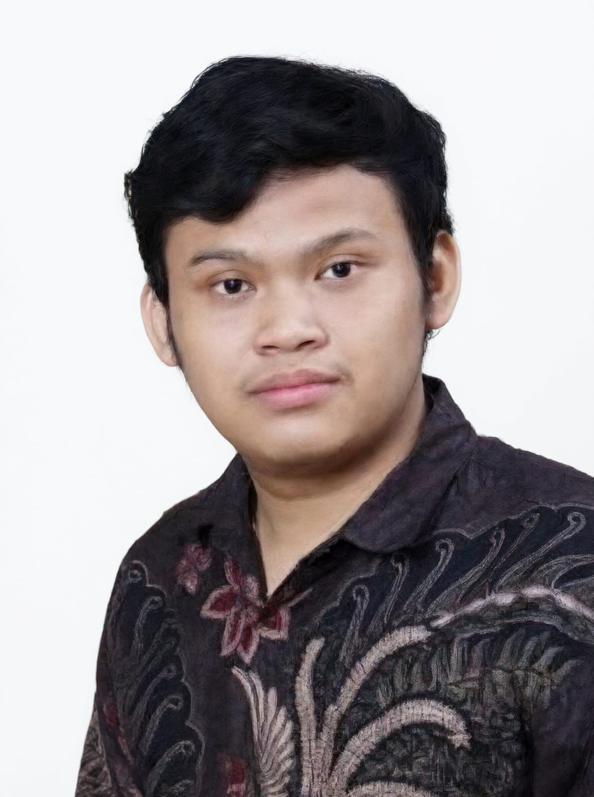

HHafiz Syadi Ismallah
NIM 06026005
kita Azie & Hafiz
Mahasiswa Teknik Informatika TAU
Selamat datang di website biografi pribadi kita berdua. Di sini kamu bisa mengenal saya dan teman saya lebih dekat, mulai dari profil, pendidikan, hingga hobi dan cita-cita.
Perkenalan singkat dari Hafiz dan Azie sebagai mahasiswa Teknik Informatika Tanri Abeng University.
Mahasiswa TAU • Teknik Informatika • Batch 15
HALOO semua! Perkenalkan, nama saya Hafiz Syadi Ismallah. Saya adalah mahasiswa TAU jurusan Teknik Informatika BATCH 15 yang memiliki ketertarikan pada dunia teknologi dan komputer.
Saya ingin terus belajar, menambah pengalaman, dan mengembangkan kemampuan di bidang teknologi informasi. Bagi saya, setiap proses belajar merupakan kesempatan untuk menjadi pribadi yang lebih baik.
Mahasiswa TAU • Teknik Informatika • Batch 15
HALOO semua! Perkenalkan, nama saya Ramadhan Setia Azie. Saya adalah mahasiswa TAU jurusan Teknik Informatika BATCH 15 yang memiliki ketertarikan pada dunia teknologi dan komputer.
Saya ingin terus belajar, menambah pengalaman, dan mengembangkan kemampuan di bidang teknologi informasi. Bagi saya, setiap proses belajar merupakan kesempatan untuk menjadi pribadi yang lebih baik.
Riwayat pendidikan dan alasan memilih Teknik Informatika dari Hafiz dan Azie.
SMA 63 Jakarta
Saya menempuh pendidikan SMA awal tahun 2023/2025 sebagai dasar untuk memperoleh ilmu dan pengalaman. Jurusan yang saya pilih adalah jurusan informatika, mencakup materi dan pembelajaran teknologi pada era sekarang seperti desain, coding, editing video, dan juga membuat web.
Berkuliah di Tanri Abeng University
Alasan saya melanjutkan pendidikan kuliah di bidang Teknik Informatika TAU adalah untuk mempelajari komponen-komponen komputer, pemrograman, dan teknologi informasi, sekaligus mengasah kemampuan saya di bidang tersebut.
SMKN 7 GARUT
Saya menempuh pendidikan SMK awal tahun 2023/2026 sebagai dasar saya ingin menceritakan perjalanan pendidikan, ketertarikan, serta keinginan saya untuk terus berkembang di era digital. Saya percaya bahwa latar belakang pendidikan TKJ dan pengetahuan teknologi dapat saling melengkapi. Dengan semangat belajar, kreativitas, dan kemauan untuk mencoba hal baru, saya berharap dapat memanfaatkan teknologi secara positif serta meraih cita-cita di masa depan.
Teknik Informatika
Alasan saya melanjutkan pendidikan di bidang Teknik Informatika karena ingin mempelajari komponen-komponen komputer, pemrograman coding web, dan teknologi informasi yang terus berkembang.
Hal-hal yang disukai Hafiz dan Azie di luar kegiatan akademik.
Hobi & Minat
Kenapa saya menggemari coding karena suka membuat sesuatu dari software.
Belajar membuat website menggunakan HTML, CSS, dan JS.
Saya gemar bermain game War Thunder Mobile, PUBG Mobile, Roblox, dan game lainnya.
Hobi & Minat
Saya suka berolahraga sepakbola/futsal untuk kesehatan secara teratur.
Saya suka voli, saya suka olahraga baru yang menarik.
Saya suka menonton film yang menarik dan menjelajahi hiburan digital lainnya.
Teruslah belajar, dan terus berkembang, dan jangan pernah berhenti mencoba dan jangan mudah menyerah.— Hafiz & Azie
Kontak Saya
Terima kasih telah mengunjungi website biografi kami. Senang bisa berbagi sedikit cerita tentang diri kami.